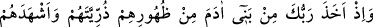
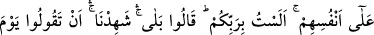
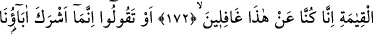
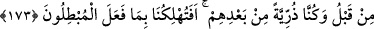
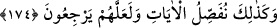

ALLAH TEÂLÂ’NIN
İSRÂİLOĞULLARI’NDAN
SÖZ ALMASI
172. Kıyamet gününde, biz bundan habersizdik demeyesiniz diye Rabbin Âdem
oğullarından, onların bellerinden zürriyetlerini çıkardı, onları kendilerine şahit
tuttu ve dedi ki: Ben sizin Rabbiniz değil miyim? (Onlar da), Evet (buna) şâhit
olduk, dediler.
173. Yahut “Daha önce babalarımız Allah’a ortak koştu, biz de onlardan sonra
gelen bir nesildik (onların izinden gittik). Bâtıl işleyenlerin yüzünden bizi helâk
edecek misin?” dememeniz için (böyle yaptık).
174. Belki inkârdan dönerler diye ayetleri böyle ayrıntılı bir şekilde açıklıyoruz.
Ey Muhammed, İsrâiloğulları’na şunu hatırlat: “Rabb’in, Âdemoğullarından, onların
bellerinden zürriyetlerini almış ve:”
“Âdemoğulları”ndan maksad, Âdem (a.s.) ve çocuklarıdır. “Âdemoğulları” ifadesi,
insan ve beşer gibi cins ismi olmuştur. Bunlardan maksad, nesilden nesle zürriyetleri
devam eden kimselerdir. Kısırlık, evlenmemiş olmak ve küçük yaşta ölmüş bulunmak
gibi sebeplerle zürriyetleri devam etmeyenler, bunların dışında kalır.
Allah Teâlâ, kıyamete dek doğacak son çocuğa kadar bütün insanları, dünyaya
gelmelerine vesile olacak sulb ve rahimleri, devir ve tavırları göz önünde bulundurarak
bir kısmını diğer bir kısmının bellerinden çıkarmış ve “Ben sizin Rabb’iniz” hiç
kimsenin müdâhelesi olmaksızın işleriniz hakkında mutlak olarak sizin mâlikiniz ve
mürebbiniz, terbiye edeniniz “değil miyim?” diye onları” yani, babalarının bellerinden
alınan zürriyetlerden her birini başkasına değil “kendilerine şâhit tutmuştu.” Bunu da
sadece kendisinin onların Rabbi olduğunu, kulluk edilmeye layık yalnız kendisinin
bulunduğunu ve diğer hükümleri bildirmek için böyle yapmıştır.
Burada insanlardan misakın, babalarının sulblerinde bulundukları sırada, alındığına
işaret vardır.
Sanki “Peki babalarının bellerinden alınan bu zürriyetler ne dediler?” diye sorulmuş,
cevap olarak şöyle buyurulmuştur: “Evet,” yani senin Rabb’imiz ve ilâhımız olduğuna,
senden başka rabbimiz bulunmadığına kendi adımıza “şâhidiz.” dediler.”